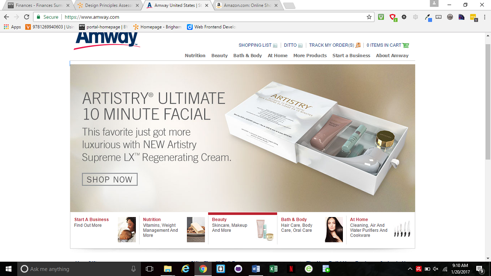
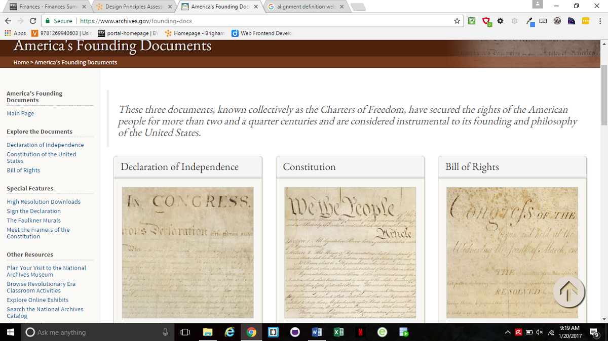
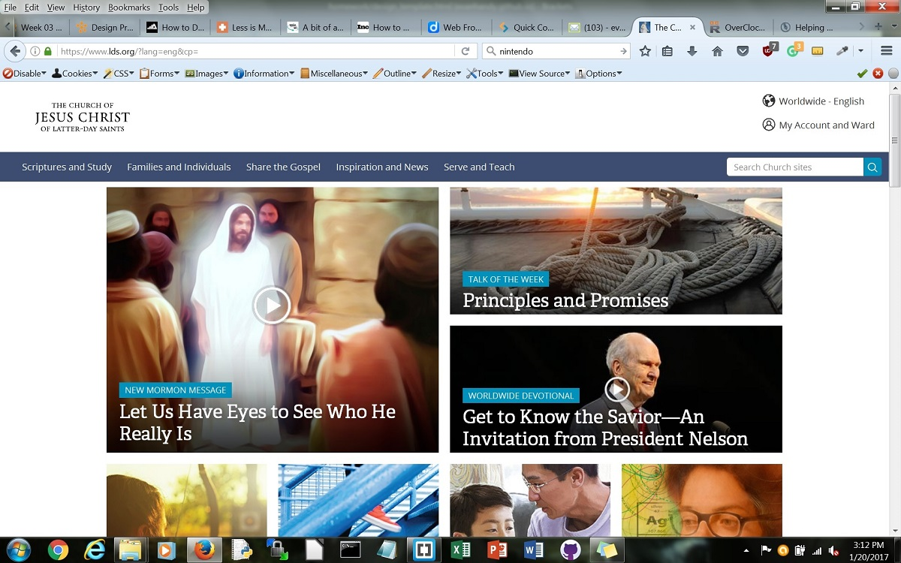
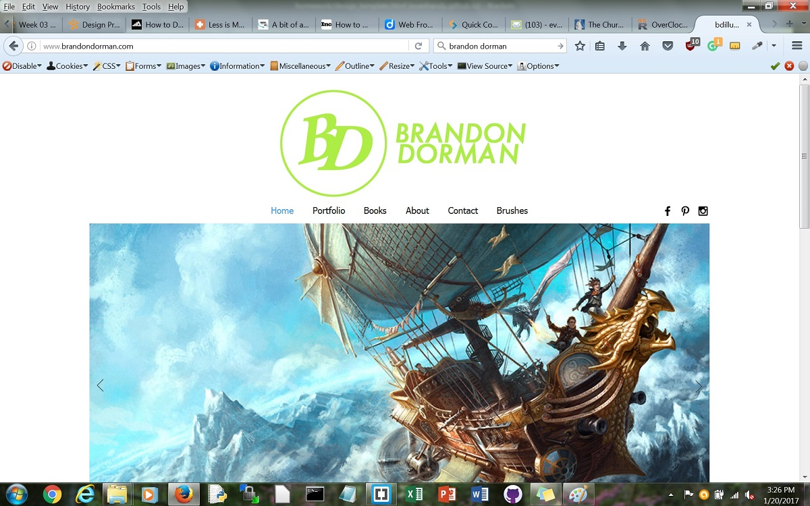
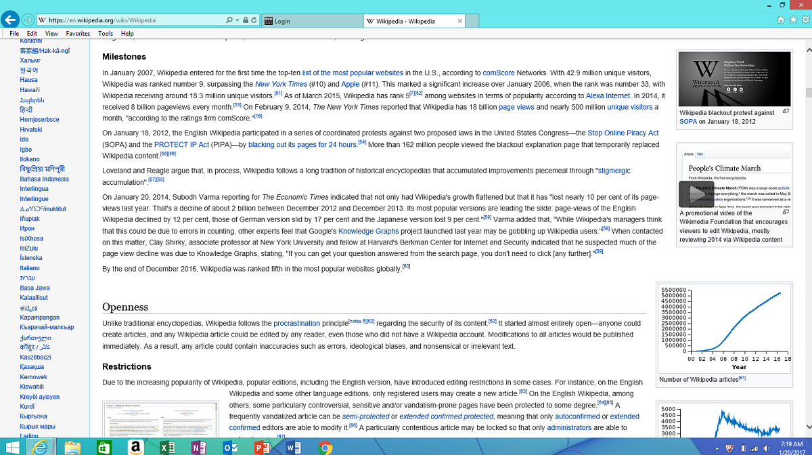

Design Principles in Mobile Sites
Proximity — Marwin Palea
Amway www.amway.com/
We see here on Amway the grouping of what they offer. Though they have many partner stores they have grouped here on their home page the main products they can offer to you before branching out to their partners. You see the start a new business, nutrition, beauty, and bath and body tags. Those are grouped together along with the picture box so you can hover over each link and it gives you a brief view, explanation, and foresight of what is offered.
Alignment — Marwin Palea
America's Founding Documents | National Archives https://www.archives.gov/founding-docs
Here on this government page we see a great example of alignment. The page is neat and easy to use. The main documents pertaining to our constitution are place in a straight line across the middle to crate order for the main material of the page. The links at the top are in a straight line and a link area has been created on the left side in a vertical box adjacent to the main material, almost like a table of contents for the page.
Repetition — Evan Handy
The Church of Jesus Christ of Latter-Day Saints https://www.lds.org/
Repetition is being used here in the text for the main picture links. Each picture has a short categorical description and a title, each description being in a small blue box, while the title is a larger, white, serif font.
Contrast — Evan Handy
BD Illustration http://www.brandondorman.com/
In this site, contrast is used by making most of the site white so the main features, the pictures, stand out. Brandon Dorman is an illustrator, and this site uses contrast to draw all attention to his colorful and bright paintings.
Typography — Giselle Chausse
Wikipedia
Wikipedia lends readers the luxury of good typography. One good example is how it shows the synopsis of anything in readable fashion. They use really good font that is legible and professional. Their headers are bold, so it's easy to recognize where a Wikipedia paragraph starts and ends. There also lies their consistency in what fonts to use, so it's not confusing to read two paragraphs with two different fonts. They apply italics whenever describing how to pronounced a word, or a foreign word. Bold font also highlights different terms for a word.